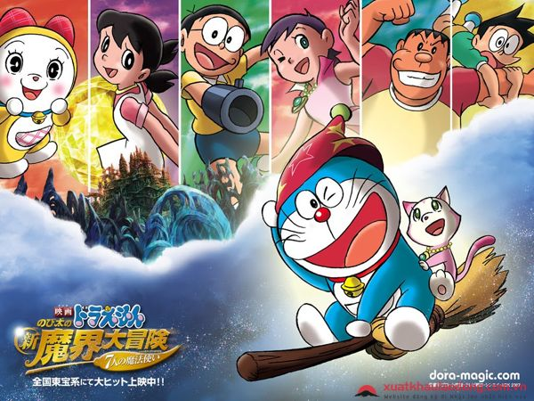

Doraemon là một trong những top truyện tranh hay tại Nhật đưa đa số các bạn trẻ ưa thích, truyện manga kể về một chú mèo máy không tai đến từ thế kỷ 22 - Doraemon để giúp một cậu bé hậu đậu lớp 5/3 tên là Nobi Nobita.
Doraemon có một chiếc túi thần kỳ trước bụng với vô vàn loại bảo bối của tương lai, chú mèo máy thường sẽ lấy những bảo bối thần kỳ để giúp Nobita thoát khỏi những rắc rối của cậu bé, để trả đũa hoặc khoe khoang với các bạn bè của cậu.
Thường thì với những bảo bối thần kỳ, Nobita thường đi quá xa so với dự định ban đầu của Doraemon và khiến mọi chuyện trở nên rắc rối hơn. Ở cuối mỗi câu chuyện, những ai gây rắc rối hoặc sử dụng sai mục đích của bảo bối sẽ phải chịu hậu quả do mình gây ra và người đọc sẽ rút ra được những bài học từ đó.
Doraemon được phát hành tại Nhật Bản và nhiều quốc gia trên thế giới, trở thành một trong những bộ truyện tranh được hâm mộ nhiều nhất, đặc biệt là ở Châu Á.
nếu muốn xem Doramon link phần dưới đây: Visit animeha.club